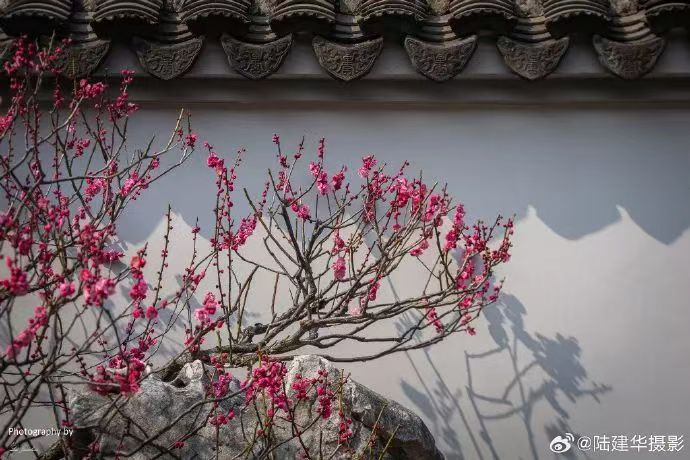
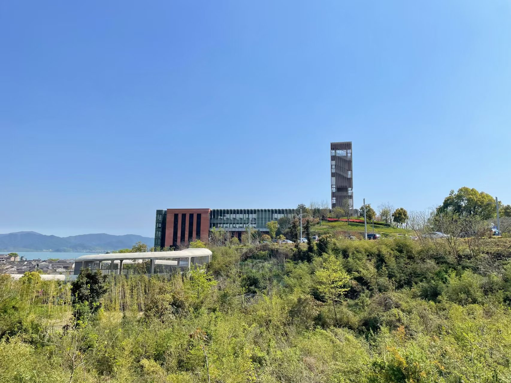
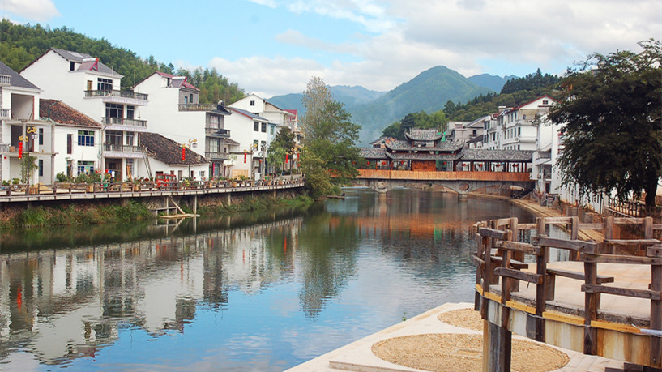
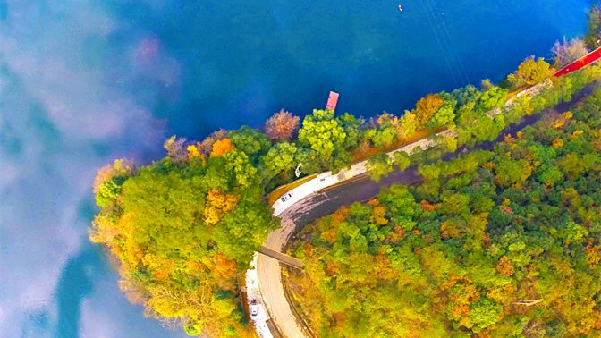
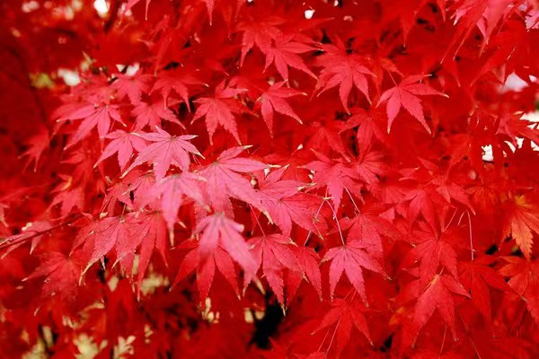
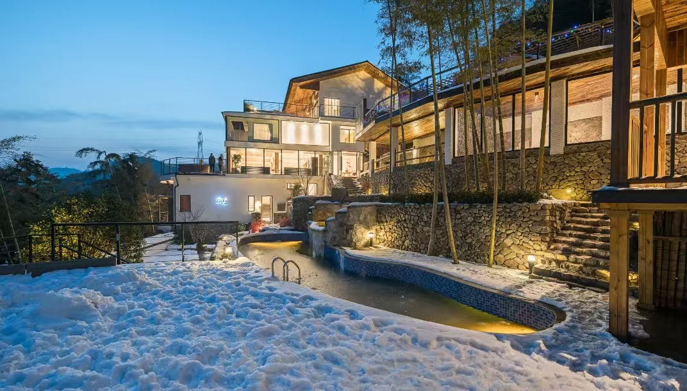
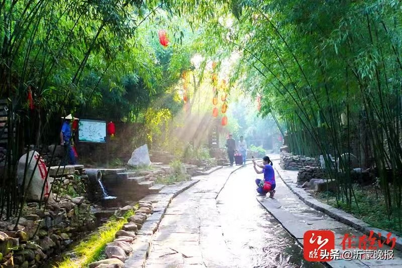

四季浙江攻略
跟随季节的脚步，发现最美的浙江
桃红柳绿，春光无限
三月浙江春风暖，草长莺飞花烂漫。西湖边的樱花、梅园里的梅花、东钱湖的桃花...每一处都是春天的画卷，每一朵都是春天的诗篇。
春季旅行指数
- 最佳时间：3月中旬-4月下旬
- 气温范围：15-25℃
- 降雨概率：适中（建议带雨具）
- 人流量：★★★☆☆（较为舒适）
- 人均消费：¥300-800/天

赏花路线推荐


必备物品
- 防晒霜（UV指数较高）
- 轻便雨伞或雨衣
- 舒适的运动鞋
- 相机或手机三脚架
注意事项
- 花期短暂，要把握时机
- 早晚温差大，注意保暖
- 热门景点可能人多
- 提前预订住宿和门票
相关推荐

湖光山色，清凉一夏
夏日浙江，碧波万顷，山清水秀。千岛湖的清澈湖水，普陀山的海风习习，都是避暑纳凉的绝佳去处。
夏季旅行指数
- 最佳时间：6月中旬-8月下旬
- 气温范围：25-35℃
- 降雨概率：较高（午后雷阵雨）
- 人流量：★★★★☆（较为拥挤）
- 人均消费：¥400-1000/天

避暑路线推荐


必备物品
- 防晒霜和防晒衣
- 泳衣和泳镜
- 轻便拖鞋
- 驱蚊用品
注意事项
- 注意防晒，避免中暑
- 选择正规游泳场所
- 海上活动注意安全
- 提前预订热门景点
相关推荐
层林尽染，五彩斑斓
金秋浙江，美不胜收。雁荡山的红叶似火，桐庐的枫叶如霞，普陀山的银杏金黄，每一处都是大自然的调色板。
秋季旅行指数
- 最佳时间：10月中旬-11月下旬
- 气温范围：15-25℃
- 降雨概率：适中（秋高气爽）
- 人流量：★★★☆☆（较为舒适）
- 人均消费：¥350-900/天

赏叶路线推荐



必备物品
- 轻便外套和长裤
- 舒适的登山鞋
- 相机和三脚架
- 防晒霜和帽子
注意事项
- 叶期短暂，要把握时机
- 山路较多，注意安全
- 早晚温差大，注意保暖
- 提前了解天气情况
相关推荐
瑞雪纷飞，温暖过冬
冬日浙江，别有韵味。莫干山温泉温暖宜人，东白山温泉养生度假，农家乐里的暖炕头，带给你不同的冬季体验。
冬季旅行指数
- 最佳时间：12月-次年2月
- 气温范围：5-15℃
- 降雪概率：较低（南部地区）
- 人流量：★★☆☆☆（较为清静）
- 人均消费：¥250-700/天

温泉养生路线


必备物品
- 保暖内衣和羽绒服
- 保温水杯和暖宝宝
- 防滑鞋和护手霜
- 温泉专用泳衣
注意事项
- 温泉水温较高，适度浸泡
- 入温泉前先淋浴清洁
- 注意保暖，避免感冒
- 选择正规温泉场所
相关推荐
实用攻略
旅行贴士
门票预订
建议提前在官方网站或官方APP预订热门景点门票，可享受折扣优惠。
天气准备
浙江气候多变，建议查看天气预报，准备雨伞、防晒霜等必备物品。
路线规划
使用高铁+公交的组合方式，既节省时间又经济实惠。
语言交流
浙江人热情好客，大部分地区普通话通行，使用翻译软件更方便。